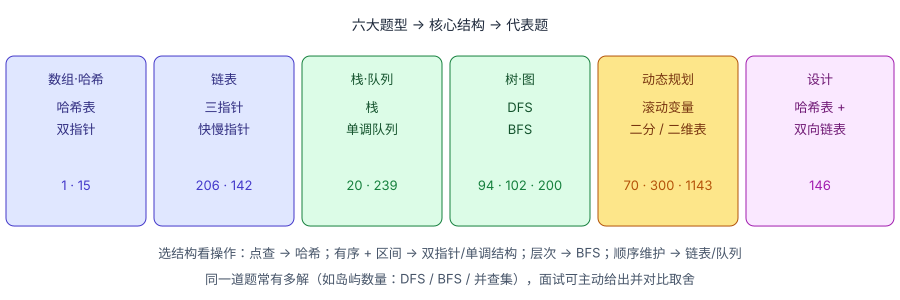
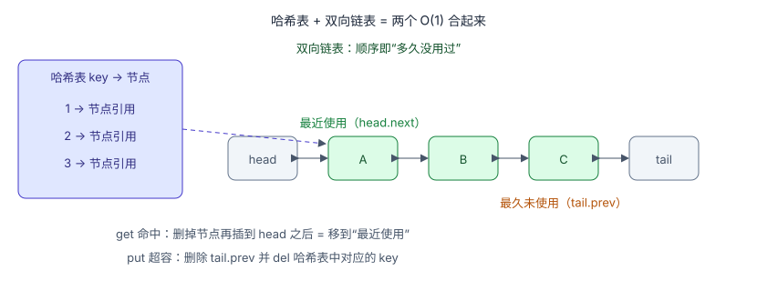

大厂面试高频题精讲
下面 15 道题覆盖六大题型。重要的不是背下代码，而是每道题都能回答三个问题：为什么选这个结构？复杂度怎么数出来？边界在哪？
怎么用这份清单
本章的 15 道题按题型组织，而不是按难度。每道题都回答同样三个问题：为什么选这个数据结构？复杂度怎么数出来？边界在哪？自己要能把这三句说清楚。

题号的“出现频率”在不同公司、不同时期差异很大，任何“命中率 X%”的说法都无法验证，本章不给这类数字。这里能负责的是：每道题的思路、复杂度和易错点都说清楚，并且代码与仓库里的参考实现一致。
建议的使用方式：先自己写一遍，再对着镜子口述复杂度，最后找 2–3 道变体。本章代码均可在 examples/interview_problems.py 中找到并运行。
数组与哈希
两数之和是“空间换时间”的最小例子。暴力枚举所有数对是 O(n²)；哈希表的洞察是：遍历到 nums[i] 时不必往后找，只需问一句“target − nums[i] 之前出现过吗”。
def two_sum(nums, target):
seen = {}
for i, num in enumerate(nums):
complement = target - num
if complement in seen:
return [seen[complement], i]
seen[num] = i
return [-1, -1] # 找不到时间 O(n)：只遍历一次，哈希表每次操作平均 O(1)；空间 O(n)：最坏存 n 个元素。边遍历边插入自然避免了“同一个元素用两次”。若数组已排序，可以换成双指针把额外空间降到 O(1)——这就是下一题的基础。
三数之和多了一个真正的难点：去重。排序后固定第一个数，剩下两个用双指针逼近，同时在三处跳过重复值。
def three_sum(nums):
nums = sorted(nums)
res = []
n = len(nums)
for i in range(n - 2):
if nums[i] > 0: # 首数已 > 0，无解
break
if i > 0 and nums[i] == nums[i - 1]: # 跳过重复的 i
continue
left, right = i + 1, n - 1
while left < right:
s = nums[i] + nums[left] + nums[right]
if s == 0:
res.append([nums[i], nums[left], nums[right]])
while left < right and nums[left] == nums[left + 1]: left += 1
while left < right and nums[right] == nums[right - 1]: right -= 1
left += 1; right -= 1
elif s < 0: left += 1
else: right -= 1
return res一条思维链：两数和（无序）→ 哈希；两数和（有序）→ 双指针；三数和 → 固定一个 + 双指针；四数和 → 固定两个 + 双指针。复杂度 O(n²)，额外空间 O(log n)（排序的栈空间，不计结果数组）。
链表经典
反转链表（206）的迭代三指针写法额外空间 O(1)，面试优先写它；递归版额外空间 O(n)（调用栈），但也要会写。两种写法已在第 23 章展开，此处只保留要点：迭代里每一步都“先存后继、再反转指针、最后两个指针一起前进”。
环形链表 II（142）考两件事：判环和找入口。快指针每次走两步、慢指针走一步，相遇即有环。
def detect_cycle(head):
slow = fast = head
while fast and fast.next:
slow = slow.next
fast = fast.next.next
if slow is fast: # 相遇，说明有环
break
else:
return None # 无环
slow = head # 一个从头、一个从相遇点
while slow is not fast:
slow = slow.next
fast = fast.next
return slow # 再次相遇处就是环入口为什么再次相遇一定在入口？设头到入口距离 a、入口到相遇点 b、相遇点回到入口 c。慢指针走了 a+b；快指针走的步数是它的两倍，故 2(a+b)=a+b+k(b+c)，化简得 a = (k−1)(b+c) + c。因此“从头”与“从相遇点”同步走，会在入口相遇。关键在于两点：循环条件要同时检查 fast 和 fast.next；相遇后重置的只是其中一个指针。
栈与队列
有效括号（20）是栈的最小应用：遇左括号入栈，遇右括号要求栈顶是对应的左括号。两个易错点也是两个边界：栈空时遇到右括号；遍历完栈还不为空。
def is_valid(s):
pairs = {")": "(", "]": "[", "}": "{"}
stack = []
for ch in s:
if ch in pairs: # 右括号
if not stack or stack[-1] != pairs[ch]:
return False
stack.pop()
else: # 左括号
stack.append(ch)
return not stack # 栈空才合法滑动窗口最大值（239）把暴力 O(nk) 降到了 O(n)，靠的是单调递减双端队列：队首是当前窗口最大值；新元素入队前，把队尾所有比它小的都弹掉，因为它们永远不可能再当最大值。
from collections import deque
def max_sliding_window(nums, k):
if k <= 0 or not nums: return []
dq, result = deque(), [] # dq 存下标，对应值单调递减
for i, num in enumerate(nums):
if dq and dq[0] <= i - k:
dq.popleft() # 队首滑出窗口
while dq and nums[dq[-1]] <= num:
dq.pop() # 弹掉不可能再成为最大值的
dq.append(i)
if i >= k - 1:
result.append(nums[dq[0]])
return result为什么是 O(n) 而不是 O(nk)？每个下标最多入队一次、出队一次，所以 while 的总工作量与 n 同阶——这是总工作量求和的论证，不是“平均每次很快”。空间 O(k)。
树与图
中序遍历（94）：递归版最快，迭代版手动模拟栈是加分项。两者结果相同，但递归会在树退化成链时把调用栈推到 O(n)。
def inorder_traversal_iterative(root):
res, stack, curr = [], [], root
while curr or stack:
while curr: # 一路向左
stack.append(curr)
curr = curr.left
curr = stack.pop() # 弹出并访问
res.append(curr.val)
curr = curr.right # 转向右子树
return res层序遍历（102）是 BFS 的标准模板：每轮先记下当前层的节点数 level_size，只处理这一层，再把下一层入队。右视图、之字形遍历、最大深度都可以从这个模板长出来。
from collections import deque
def level_order(root):
if not root: return []
res, q = [], deque([root])
while q:
level = []
for _ in range(len(q)): # 先固定本层节点数
node = q.popleft()
level.append(node.val)
if node.left: q.append(node.left)
if node.right: q.append(node.right)
res.append(level)
return res岛屿数量（200）是“多解法之王”：DFS、BFS、并查集都能做。DFS 的“淹没法”最简洁——每遇到一个 '1' 就计数加一，并把整块相连的 '1' 全改成 '0'。
def num_islands(grid):
if not grid or not grid[0]: return 0
rows, cols = len(grid), len(grid[0])
count = 0
def dfs(r, c):
if r < 0 or r >= rows or c < 0 or c >= cols or grid[r][c] != "1":
return
grid[r][c] = "0" # 淹没法标记访问
dfs(r + 1, c); dfs(r - 1, c); dfs(r, c + 1); dfs(r, c - 1)
for r in range(rows):
for c in range(cols):
if grid[r][c] == "1":
count += 1
dfs(r, c)
return count时间 O(m·n)（每个格最多访问一次）；空间是递归栈深度，最坏可达 O(m·n)（整片都是陆地时），而不是 O(min(m,n))。
动态规划
爬楼梯（70）是 DP 的入门题：到第 i 阶的方法数 = 到 i−1 阶再走一步 + 到 i−2 阶再走两步，即 dp[i] = dp[i−1] + dp[i−2]。只用两个变量滚动就能把空间降到 O(1)。
def climb_stairs(n):
if n <= 2: return n
a, b = 1, 2 # dp[1], dp[2]
for _ in range(3, n + 1):
a, b = b, a + b
return b最长递增子序列（300）有 O(n²) 的 DP，也有 O(n log n) 的贪心+二分。后者维护一个 tails 数组：tails[i] 是长度为 i+1 的递增子序列的最小末尾。对每个 num，用二分找到第一个 ≥ num 的位置并替换它。
def length_of_lis(nums):
tails = []
for num in nums:
left, right = 0, len(tails)
while left < right: # 找第一个 >= num 的位置
mid = (left + right) // 2
if tails[mid] < num: left = mid + 1
else: right = mid
if left == len(tails): tails.append(num)
else: tails[left] = num
return len(tails)要注意 tails 本身不是某个具体的递增子序列，只是每个长度下的最小末尾。它的长度等于 LIS 长度，这是一个需要独立证明的结论，不能当成“tails 就是答案”。
最长公共子序列（1143）是二维 DP 模板：dp[i][j] 表示 text1 前 i 个字符与 text2 前 j 个字符的 LCS 长度。字符相等就取左上角加一，否则取上方与左方的较大值。
def longest_common_subsequence(text1, text2):
m, n = len(text1), len(text2)
dp = [[0] * (n + 1) for _ in range(m + 1)]
for i in range(1, m + 1):
for j in range(1, n + 1):
if text1[i - 1] == text2[j - 1]:
dp[i][j] = dp[i - 1][j - 1] + 1
else:
dp[i][j] = max(dp[i - 1][j], dp[i][j - 1])
return dp[m][n]设计题：LRU 缓存
LRU（146）是算法题与系统设计题之间的桥梁。两个需求必须同时满足：O(1) 的 get/put，以及“缓存满时淘汰最久未使用”。单个结构做不到，所以把职责拆开：
- 哈希表负责 key → 节点的 O(1) 定位；
- 双向链表负责访问顺序：最近使用的在 head 一侧，最久未使用的在 tail 一侧。

为什么是双向链表？put 已存在的 key 时要先把节点摘下来再插到头部，删除任意节点必须 O(1)，而这要求节点同时知道前驱和后继——单向链表做不到。
class LRUCache:
def __init__(self, capacity):
if capacity <= 0: raise ValueError("capacity must be positive")
self.capacity = capacity
self.cache = {}
self.head, self.tail = _DNode(), _DNode() # 两个哨兵
self.head.next, self.tail.prev = self.tail, self.head
def get(self, key):
if key not in self.cache: return -1
node = self.cache[key]
self._remove(node); self._add_to_head(node)
return node.value
def put(self, key, value):
if key in self.cache:
node = self.cache[key]; node.value = value
self._remove(node); self._add_to_head(node)
else:
if len(self.cache) >= self.capacity: # 淘汰 tail 侧
lru = self.tail.prev
self._remove(lru); del self.cache[lru.key]
node = _DNode(key, value)
self.cache[key] = node
self._add_to_head(node)完整实现（含 _remove / _add_to_head / _DNode）与测试在仓库 examples/interview_problems.py 与 tests/test_interview_problems.py。get 与 put 都是 O(1)；空间 O(capacity)。面试追问“能不能用 OrderedDict”——能，但手写双向链表才能展示你对底层顺序维护的理解。
速查表
把本章题目的结构、模式与复杂度归到一张表里。注意空间一栏：三数之和是排序的栈空间（不计结果）；岛屿数量用的是 DFS 递归栈，最坏 O(m·n)（整片陆地）。
| # | 题目 | 结构 | 模式 | 时间 | 空间 |
|---|---|---|---|---|---|
| 1 | 两数之和(1) | 哈希表 | 空间换时间 | O(n) | O(n) |
| 2 | 三数之和(15) | 数组·双指针 | 排序+双指针+去重 | O(n²) | O(log n) |
| 3 | 反转链表(206) | 链表 | 三指针 / 递归 | O(n) | O(1) |
| 4 | 环形链表 II(142) | 链表 | 快慢指针 | O(n) | O(1) |
| 5 | 有效括号(20) | 栈 | 栈 + 映射 | O(n) | O(n) |
| 6 | 滑动窗口最大值(239) | 双端队列 | 单调队列 | O(n) | O(k) |
| 7 | 二叉树中序遍历(94) | 栈 / 递归 | DFS | O(n) | O(n) |
| 8 | 层序遍历(102) | 队列 | BFS | O(n) | O(n) |
| 9 | 岛屿数量(200) | 图 | DFS / BFS / 并查集 | O(m·n) | O(m·n) |
| 10 | 爬楼梯(70) | DP | 斐波那契滚动 | O(n) | O(1) |
| 11 | 最长递增子序列(300) | DP · 二分 | 贪心 + 耐心排序 | O(n log n) | O(n) |
| 12 | 最长公共子序列(1143) | 二维 DP | DP 表格 | O(m·n) | O(m·n) |
| 13 | LRU 缓存(146) | 哈希 + 双向链表 | 设计题 | O(1) | O(capacity) |
| 14 | 合并 K 个升序链表(23) | 优先队列 | 堆 / 分治 | O(N log k) | O(k) |
| 15 | 接雨水(42) | 数组 · 双指针 | 左右双指针 | O(n) | O(1) |
第 14、15 题在正文中没有展开代码，但 examples/interview_problems.py 中已给出可运行实现与测试，可直接对照学习。
带走三个判断准则
- 先判断题目的“访问模式”，再选结构：点查用哈希，有序/区间用双指针或单调结构，层次用 BFS，顺序维护用链表或队列。
- 同阶复杂度不等于同样快；说复杂度时要带上前提（例如哈希查找是平均 O(1)）。
- 每道题都问自己“边界是什么”：空输入、单元素、全重复、负数，往往就是面试官追问的点。